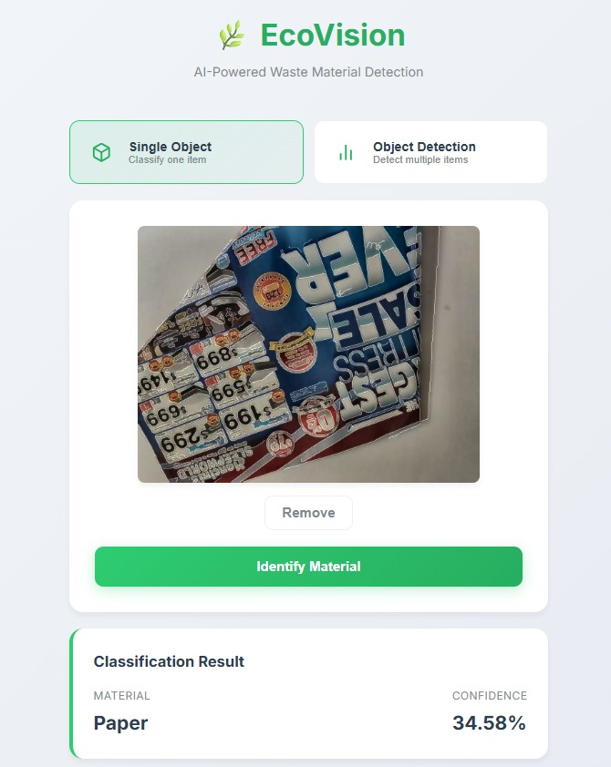
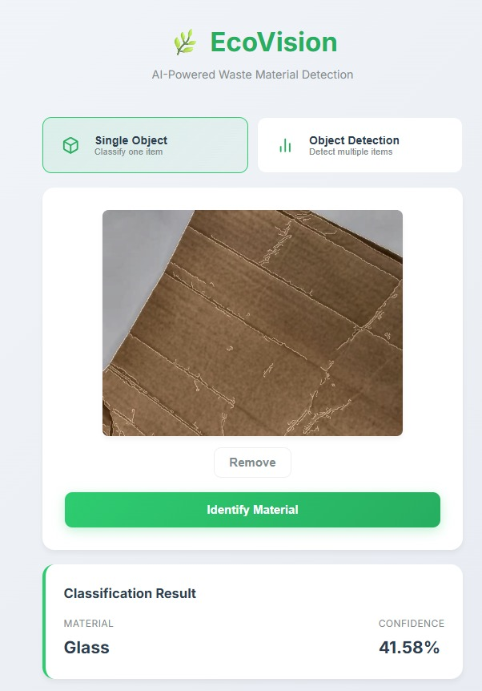
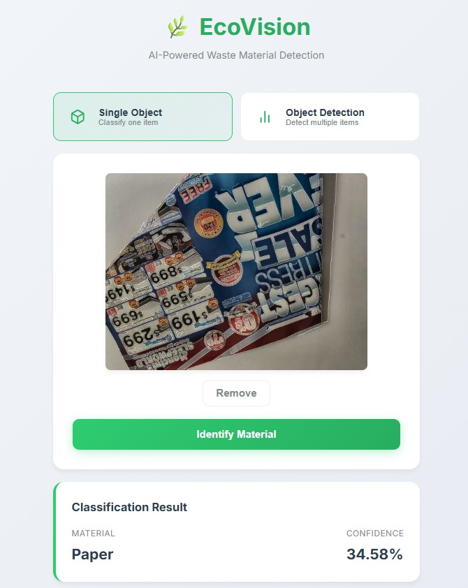
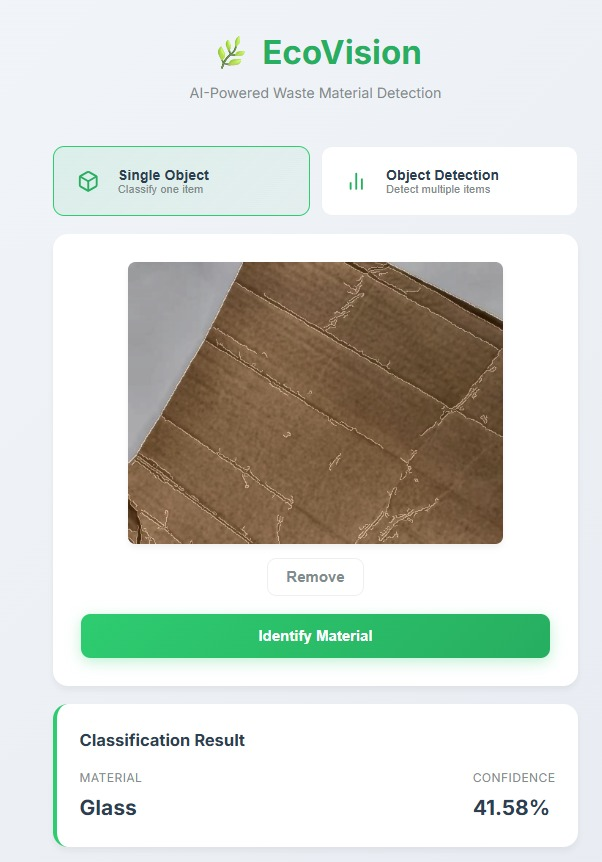
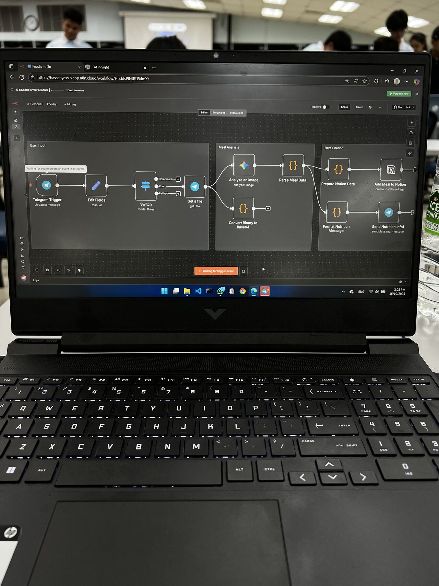
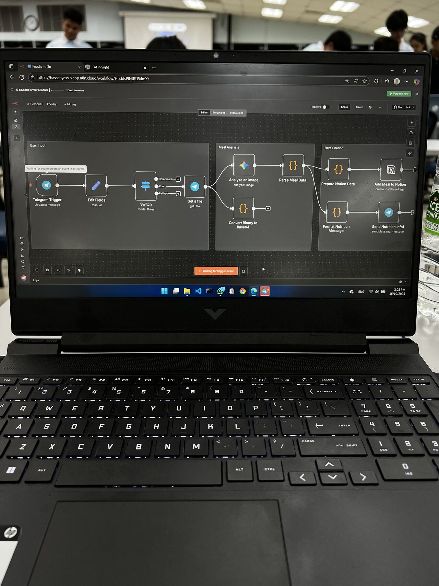

Projects
A collection of experiments, products, and solutions.
Featured Work

 



EcoVision AI
Intelligent waste sorting ecosystem using computer vision and deep learning. Transforms recycling bins into interactive Smart Bins with 87.53% accuracy.

 

EatInSight
Telegram bot that analyzes food photos to extract macros and nutrition data. 2nd place winner at Melaka AI Hackathon for revolutionizing dietary tracking.


PathToHire
AI-powered mock interview platform that generates personalized technical questions. Democratizes interview coaching through adaptive generative AI.


Heart Attack Prediction
Real-time cardiac risk assessment using Deep Neural Networks and Genetic Algorithms. Achieves 89% accuracy with zero-latency inference for preventative healthcare.


LearnBack
AI learning platform where students teach concepts to the system. Detects misconceptions and provides targeted feedback for deeper understanding.